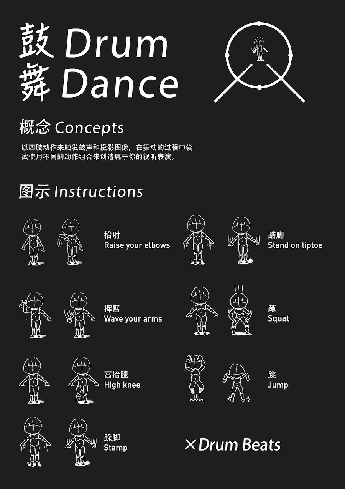

Drum Dance
Kinect Interaction Projection
School Project
2016.3
School Project
2016.3
The concept is using body movements as input to trigger drum sounds and motion graphics. Instead of holding a pair of drumstick, you can wave your hands directly to make drum sound.
Concept & Construction

Concept & Construction
Photos
Demo Video